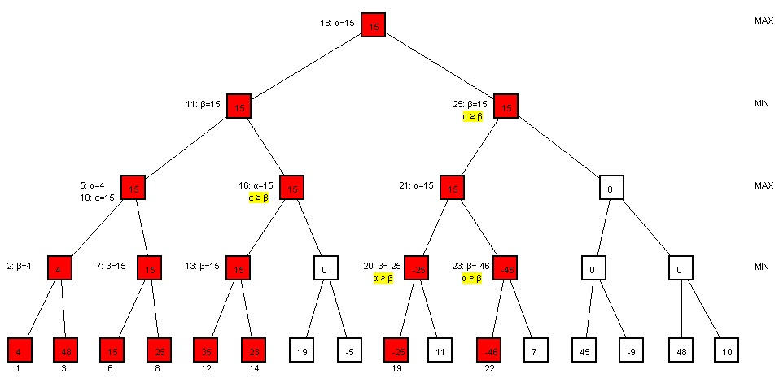

Chess Engine

Traditional chess engines leverage classical artificial intelligence techniques, employing algorithms such as Minimax, Negamax, and Alpha-Beta Pruning. These engines operate on a deterministic, exhaustive search approach, utilizing a predefined heuristic for position evaluation, exploring the game tree to a specified depth, and making decisions based on minimizing potential losses and maximizing gains. While highly effective and well-established, these engines differ fundamentally from neural network-based engines like ChessCoach, which incorporate machine learning for complex, non-linear evaluations.
Chess Engine Implementation
-
Board Representation:
 The engine represents the board as a 2D array of integers, with each integer representing a piece. The engine uses the following integer values to represent pieces:
The engine represents the board as a 2D array of integers, with each integer representing a piece. The engine uses the following integer values to represent pieces:- White Pieces: 1-6
- Black Pieces: -1 to -6
- Empty Squares: 0
-
Move Generation:
 The engine generates moves for a given position by iterating through the board and generating moves for each piece. It uses the following functions to generate moves for each piece:
The engine generates moves for a given position by iterating through the board and generating moves for each piece. It uses the following functions to generate moves for each piece: -
Move Validation: The engine validates moves by generating all possible moves for the current position and checking if the move is in the list of possible moves.
-
Position Evaluation: It will check for threats, pins and checks.
-
Move Selection: We have made options to select from the following algorithms: a. Random b. Minimax c. Negamax d. Alpha-Beta Pruning
Chess Engine Evaluation
-
Minimax Algorithm:
 The Minimax algorithm, a decision-making strategy in two-player games like chess, aims to minimize potential losses for a worst-case scenario while maximizing gains. The engine explores a game tree, considering all possible moves for both players up to a certain depth.
The Minimax algorithm, a decision-making strategy in two-player games like chess, aims to minimize potential losses for a worst-case scenario while maximizing gains. The engine explores a game tree, considering all possible moves for both players up to a certain depth.-
Evaluation Function: At the leaves of the game tree, an evaluation function assesses the desirability of a position, assigning a numerical value indicating its favorability for the side to move.
-
Depth Search: The engine conducts a depth-first search, reaching a specified depth in the game tree before evaluating positions. The search is exhaustive, considering all possible move sequences up to the specified depth.
-
Backtracking: After evaluating a position, the engine backtracks to the previous position and explores the next possible move. It repeats this process until it reaches the specified depth.
-
-
Negamax Algorithm:
 Negamax optimizes Minimax, simplifying implementation and reducing code complexity. It capitalizes on the fact that in two-player zero-sum games like chess, the evaluation of a position for one player is the negation of the evaluation for the other.
Negamax optimizes Minimax, simplifying implementation and reducing code complexity. It capitalizes on the fact that in two-player zero-sum games like chess, the evaluation of a position for one player is the negation of the evaluation for the other.- Simplified Minimax: Negamax combines the roles of maximizing and minimizing players into a single recursive function, reducing redundancy and improving code conciseness.
-
Alpha-Beta Pruning:  Alpha-Beta Pruning optimizes Minimax and Negamax by eliminating the evaluation of irrelevant branches in the game tree.
-
Branch Elimination: As the engine traverses the game tree, it maintains alpha and beta values, representing the minimum score for the maximizing player and the maximum score for the minimizing player. If a branch’s score won’t affect the final result, it prunes that branch, saving computational resources.
-
Efficiency Improvement: Alpha-Beta Pruning significantly reduces the number of nodes evaluated, enabling deeper exploration of the game tree within the same time constraints.
-